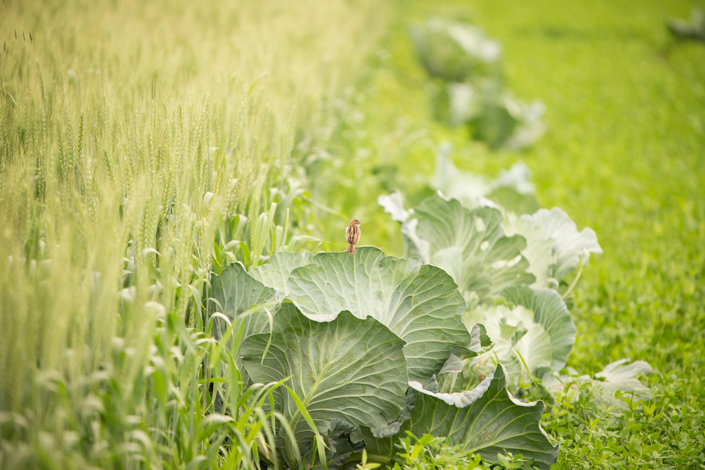
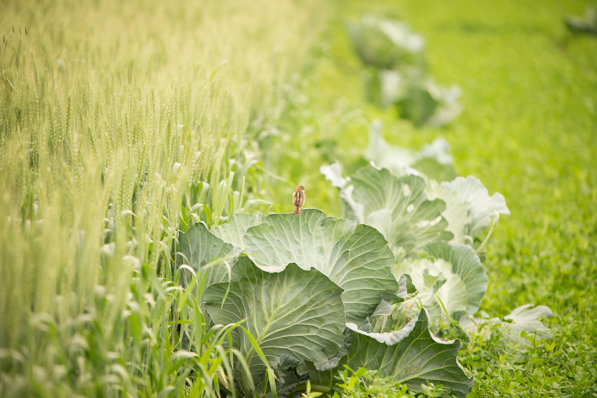
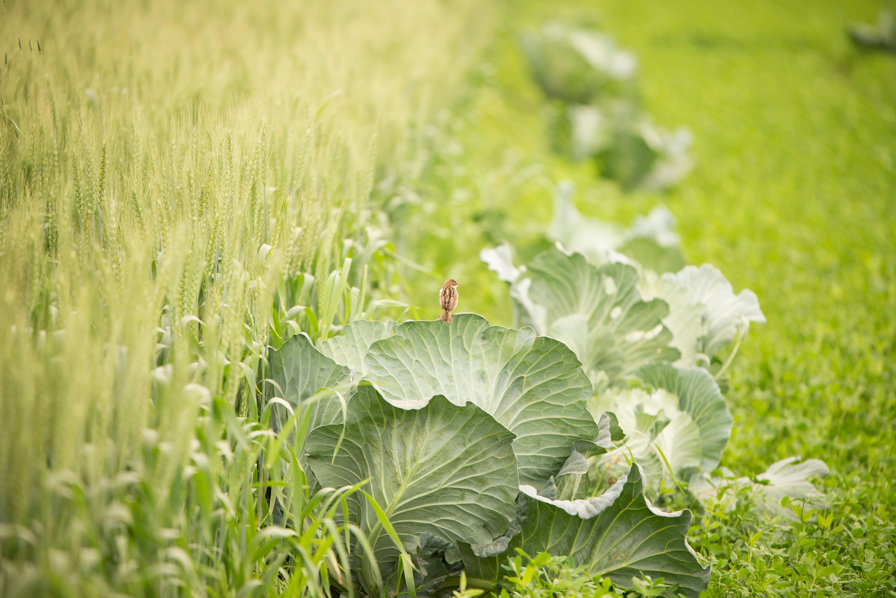

Fruits and vegetables are essential superheroes in our daily diet, offering a rainbow of flavors, colors, and vital nutrients that contribute to our well-being. From the natural sweetness and energy boost of fruits like apples and berries to the nutrient-packed goodness of veggies such as leafy greens, carrots, and broccoli, these wholesome foods are not only delicious but also play a crucial role in keeping our bodies strong and resilient. Beyond personal health, embracing a variety of fruits and veggies supports environmental sustainability, fostering biodiversity and using fewer resources. Picture our plates as vibrant canvases, where each fruit and vegetable adds a unique color, creating a beautiful and nutritious masterpiece that contributes to a balanced and happy life. Amidst the hustle of daily life, savoring the simplicity and goodness of fruits and veggies becomes a daily act of self-love and a delightful journey towards overall well-being and a healthier planet.
